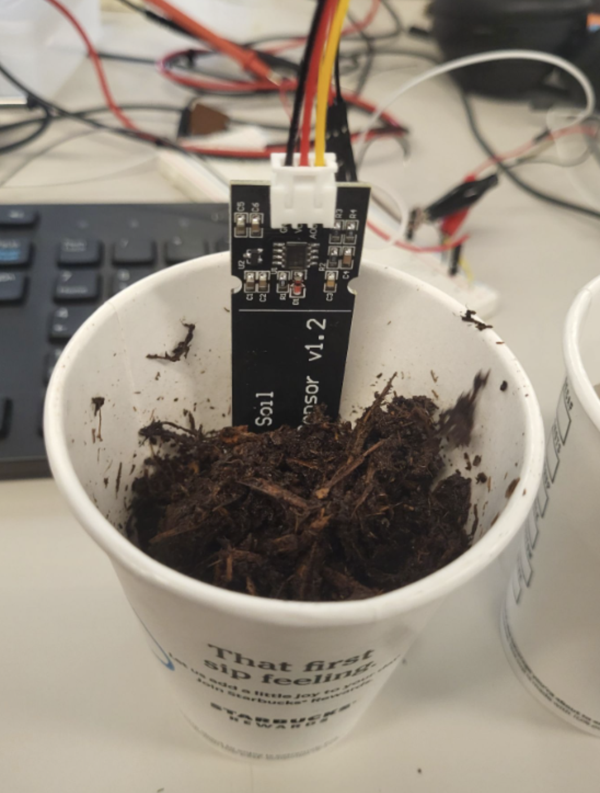

My Projects
Hardware-first builds with clear engineering outcomes.
Embedded Audio System
VS1003B MP3 Player
STM32 · FatFS · Decoder
Autonomous Navigation
ST-P3
Controls · Perception
Biomedical Signal
Pulse Oximeter
Sensor Stability
Embedded Sensing
Soil Moisture Audio Guide
Accessibility · Analog I/O
Embedded + FPGA
Snake Game
VGA · Game Logic
Project Focus Areas
1. VS1003B MP3 Player: End-to-end STM32 audio playback with VS1003B decoding, SD streaming, and control logic integration.
2. Earthquake Structure Response Modeling: Spring-damper dynamics model to evaluate resonance and safer structural behavior under seismic loading.
3. Pulse Oximeter Stabilization: Hardware-driven signal conditioning and validation for more reliable biomedical sensing output.
4. Soil Moisture Audio Guide: Accessibility-first sensing flow with moisture detection and direct auditory feedback cues.
5. FPGA Snake Game: Full game implementation with VGA rendering, input handling, collision logic, and score control.